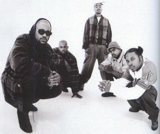

Stardom: 1994–1995

In late 1993, Shakur formed the group Thug Life with Tyrus "Big Syke" Himes, Diron "Macadoshis" Rivers, his
stepbrother Mopreme Shakur, and Walter "Rated R" Burns.
Usually, Thug Life performed live without Tupac.
2Pac's third album, arriving in March 1995 as Me Against the World, is now hailed as his magnum opus, and
commonly ranks among the greatest, most influential rap albums.

The album sold 240,000 copies in its first week, setting a then record for highest first-week sales for a
solo male rapper.
The lead single, "Dear Mama," arrived in February with the B side "Old School."
The
album's most successful single, it topping the Hot Rap Singles chart, and peaked at #9 on the pop singles
chart, the Billboard Hot 100.
In July, it was certified Platinum.
It ranked #51 on the year-end charts. The second single, "So Many Tears," released in June, reached #6 on
the Hot Rap Singles chart and #44 on Hot 100.August brought the final single, "Temptations," reaching #68 on
the Hot 100, #35 on the Hot R&B/Hip-Hop Singles & Tracks, and #13 on the Hot Rap Singles.
At the 1996 Soul
Train Music Awards, Tupac won for best rap album. In 2001, it ranked 4th among his total albums in sales,
with about 3 524 567 copies sold in the US.
Superstardom: 1995–1996
While imprisoned February to October 1995, Tupac wrote only one song, he would say. Rather, he took to
political theorist Niccolò Machiavelli's treatise The Prince and military strategist Sun Tzu's treatise The
Art of War.
2Pac's fourth album, All Eyez on Me, arrived on February 13, 1996. Of two discs, it basically was rap's
first double album—meeting two of the three albums due in Tupac's contract with Death Row—and bore five
singles while perhaps marking the peak of 1990s rap.

With standout production, the album has more party tracks and often a triumphant tone.
As 2Pac's second
album to hit #1 on both the Top R&B/Hip-Hop Albums chart and the pop albums chart, the Billboard 200, it
sold 566,000 copies in its first week and was it was certified 5× Multi-Platinum in April.
"How Do U Want It" as well as "California Love" reached #1 on the Billboard Hot 100.
At the 1997 Soul Train Awards, it won in R&B/Soul or Rap Album of the Year.
At the 24th American
Music Awards, Tupac won in Favorite Rap/Hip-Hop Artist.
(The album was certified 9× Multi-Platinum in June
1998, and 10× in July 2014)

Tupac's fifth and final studio album, The Don Killuminati: The 7 Day Theory, commonly called simply The 7
Day Theory, was released under a newer stage name, Makaveli.
This album had been created in seven days
total during August 1996.
The lyrics were written and recorded in three days, and mixing took another
four days.